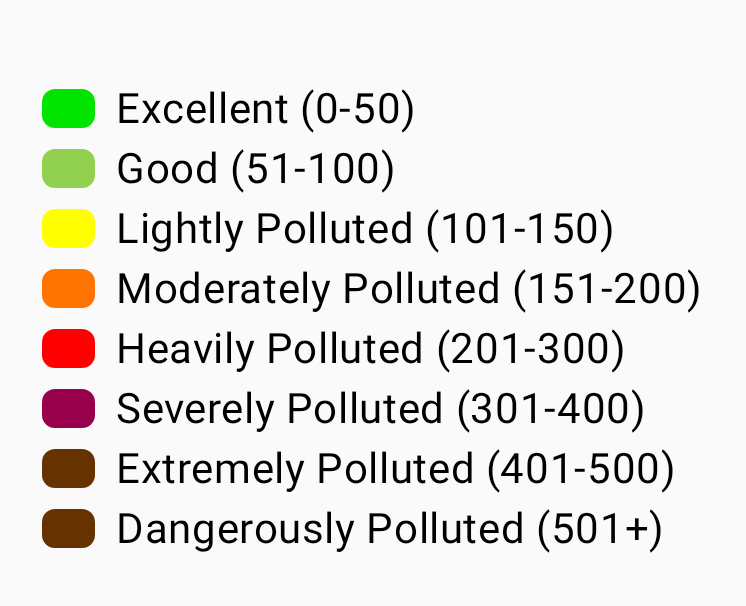
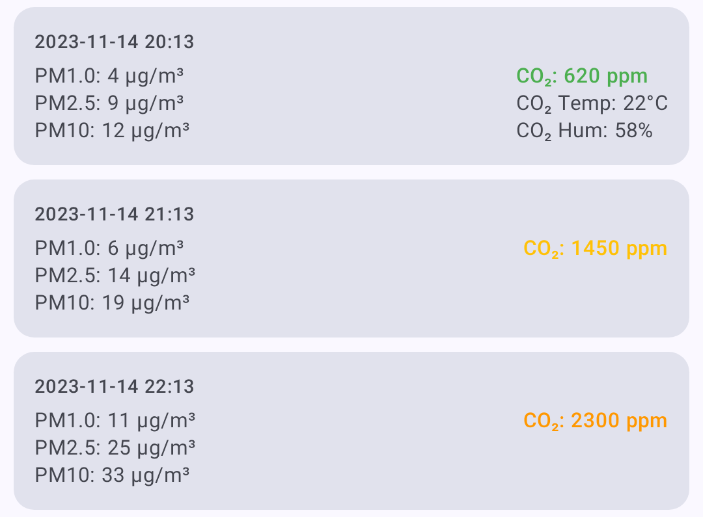
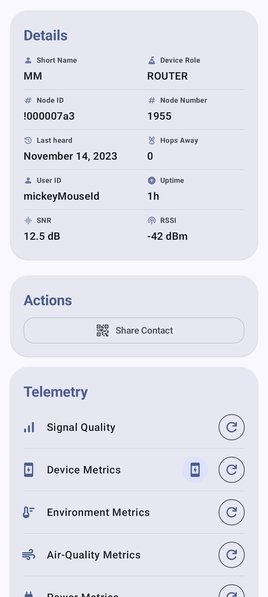
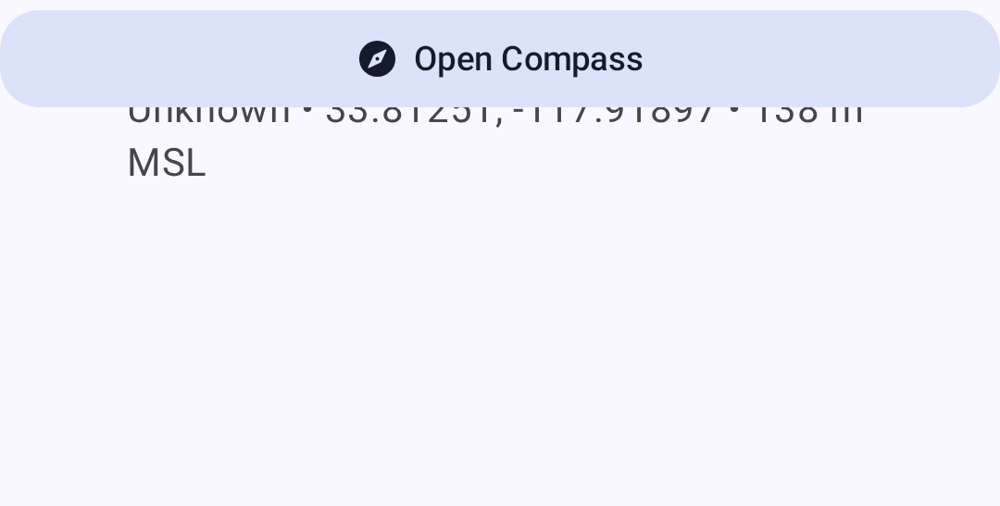

Node Metrics
The node detail screen provides comprehensive telemetry and metrics for each node on your mesh.
Device Metrics
Basic operating information reported by each node:
| Metric | Popis |
|---|---|
| Battery Level | Current battery percentage |
| Napätie | Battery voltage reading |
| Využitie kanálu | Percentage of airtime consumed |
| Airtime | Transmission time used by this node |
| Doba prevádzky | Time since last reboot |
Device metrics are displayed as individual cards with trend sparklines showing battery level, voltage, channel utilization, airtime, and uptime over time.
💡 Tip: Tap any metric card to expand it into a full chart with historical data points. Pinch to zoom the time axis.
Environment Metrics
Environmental sensor data (requires compatible hardware):
| Metric | Sensor Examples |
|---|---|
| Teplota | BME280, BME680, SHT31 |
| Vlhkosť | BME280, BME680, SHT31 |
| Barometrický tlak | BME280, BMP280 |
| Gas Resistance | BME680 |
| IAQ (Air Quality) | BME680 |
Environment metrics are charted over time for easy trend analysis — temperature, humidity, and pressure each get their own line chart with the measurement unit displayed on the Y axis.
The BME680 IAQ (Indoor Air Quality) index is a single 0–500+ value derived from gas resistance, shown against a color-coded scale from Excellent to Dangerously Polluted:

💡 Tip: Environment metrics require a sensor connected to the remote node. Not all nodes report environmental data. See Telemetry & Sensors for a full list of supported sensors.
Air Quality Metrics
Air Quality is a dedicated metrics view for nodes equipped with a particulate-matter and/or CO₂ sensor. It is separate from the BME680 IAQ reading listed under Environment Metrics — IAQ is a single gas-resistance-derived index, while the Air Quality view charts the underlying particulate and CO₂ measurements.
| Metric | Unit | Popis |
|---|---|---|
| PM1.0 | µg/m³ | Particulate matter up to 1.0 micron |
| PM2.5 | µg/m³ | Particulate matter up to 2.5 microns |
| PM10 | µg/m³ | Particulate matter up to 10 microns |
| AQI | EPA index | EPA NowCast AQI computed from your recent PM2.5 history, with a color-coded severity label. Shown next to PM2.5 once enough readings have accumulated. |
| CO₂ | ppm | Carbon dioxide concentration |
| CO₂ temperature | °C / °F | Temperature reported by the CO₂ sensor itself (e.g. SCD4x) |
| CO₂ humidity | % | Relative humidity reported by the CO₂ sensor |
CO₂ readings are color-coded by severity to make air quality easy to read at a glance:
| Band | CO₂ Range (ppm) | Color |
|---|---|---|
| Dobrý | < 1000 | Zelená |
| Stuffy | < 2000 | Amber |
| Poor | < 5000 | Orange |
| Unsafe | < 30000 | Červená |
| Evacuate | ≥ 30000 | Dark red |

An air-quality log/metrics button appears on the node detail screen only when the node has reported air-quality telemetry. From the Air Quality view you can:
- Select a time frame for the charts.
- Filter with metric chips — only metrics that have data are shown.
- Refresh / request the latest air-quality telemetry.
- Export to CSV for analysis in a spreadsheet.
💡 Tip: Air Quality metrics require a compatible air-quality sensor on the remote node. If a node has no particulate or CO₂ sensor, the air-quality button won’t appear. See Telemetry & Sensors for supported hardware.
Signal Metrics
Radio signal quality information:
| Metric | Popis |
|---|---|
| SNR | Signal-to-Noise Ratio (higher is better) |
| RSSI | Received Signal Strength Indicator (closer to 0 is better) |
| Noise Floor | Local background RF noise in dBm (more negative is quieter) |
| Hop Count | Number of mesh hops for last message |
Signal Quality Reference
Signal quality is rated from SNR relative to the active LoRa modem preset’s demodulation floor, not from fixed thresholds — a given SNR means different things on different presets (e.g. −15 dB is fine on LongSlow but unusable on ShortFast). RSSI is shown but is not part of the rating. Letting limit be the preset’s SNR limit:
| Quality | Criteria |
|---|---|
| Dobrý | SNR above the preset’s limit |
| Primeraný | less than 5.5 dB below the limit |
| Zlý | 5.5 dB to 7.5 dB below the limit |
| Žiadny | more than 7.5 dB below the limit |
See Understanding the Signal Meter for the full explanation.
Local Stats from your connected radio are also shown in Signal Quality when available. These logs include noise floor, traffic counters, relay counters, online node counts, and radio uptime. The noise floor chart uses a dashed reference line at -85 dBm to help identify a busy RF environment. Use Request to ask the connected radio for a fresh Local Stats telemetry report, Clear to remove Local Stats logs for that node, and Save to export the visible Local Stats history as CSV.
Power Metrics
Power management telemetry (requires INA sensor or compatible hardware):
| Metric | Popis |
|---|---|
| Bus Voltage | Supply voltage |
| Prúd | Power draw in milliamps |
| Napájanie | Calculated wattage |
Trasovanie
Traceroute shows the path a message takes through the mesh:
- From the node detail screen, tap Traceroute.
- The app sends a traceroute request to the target node.
- Results show each hop with SNR/RSSI values.
Reading Traceroute Results
You → Node A (SNR: 8.5) → Node B (SNR: 5.2) → Target
Each hop represents a relay node that forwarded the message.
Log pozície
Historical position data for nodes that share their location:
- GPS coordinates
- Nadmorská výška
- Speed (if moving)
- Timestamp for each position report
Informácia o susedoch
Shows which nodes a given node can directly hear, useful for understanding mesh topology.
Viewing Metrics
- Navigate to Nodes.
- Tap the node you want to inspect.
- Select the metric category from the detail tabs.

The position tab shows location data for nodes that share GPS:

⚠️ Note: Metrics are only available when they have been reported by the remote node. Metrics update at intervals configured on each node’s telemetry settings.
Related Topics
- Nodes — node list, filtering, and sorting
- Telemetry & Sensors — supported sensors and configuration
- Signal Meter — how signal quality is calculated from SNR and RSSI
- Discovery — traceroute details and neighbor info
- Units & Locale — temperature, distance, and speed display formats